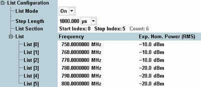
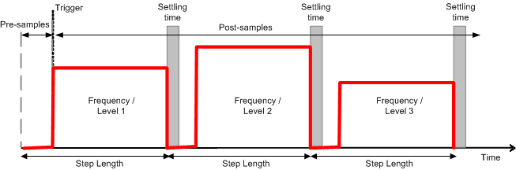

In list mode, the I/Q recorder measurement extends over a series of steps with common length but individual analyzer settings. The list mode is similar to the list mode for power or I/Q vs. slot measurements. A (fictitious) GUI for the I/Q recorder would look as shown below.

In list mode, the interval to be measured is given by the <Step Length> times the number of steps (<Count> = <Stop Index> - <Start Index> + 1). The actual measurement time can be smaller or larger than the list mode interval. The actual measurement time is given by the no. of captured samples = <Samples before trigger> + <Samples after trigger> divided by the sampling rate.
- If the measurement time is smaller than the list mode interval, the I/Q recorder results do not cover all list steps.
- If the measurement time is larger than the list mode interval, the I/Q recorder cycles through the list so that some steps are measured more than once.
The R&S CMW needs a settling time of approx. 300 μs after each frequency change, 5 μs after each level change. Samples acquired during the settling times yield potentially inaccurate results. Make sure that the mobile phone under test changes its frequency and/or level in line with the defined power/frequency steps and discard the results measured during the settling times. |
